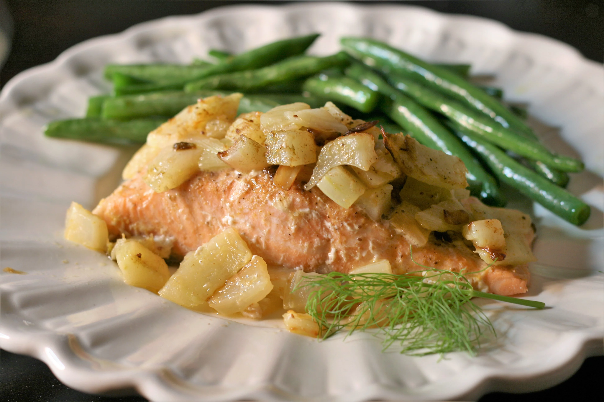

Recipe for Baked Orange Salmon with Fennel

Description
This is a recipe to make a Baked Orange Salmon with Fennel Dish
Ingredients
- 1 small fennel bulb, trimmed and diced
- 1 tablespoon olive oil
- 2 (8 ounce) salmon fillets
- 1/2 cup orange juice
- 1 pinch Old Bay Seasoning
Steps
- Preheat the oven to 350 degrees F (150 degrees C).
- In a medium skillet over medium heat, cook fennel in olive oil until translucent, about 20min.
- Place the fillets skin side down in a glass baking dish. Pout the orange juice over the fillets. Sprinkle fennel over in an even layer, and seaon with OLD BAY. Cover the dish with aluminum foil.
- Bake for 20 to 25min, or until fish flakes easily with a fork.